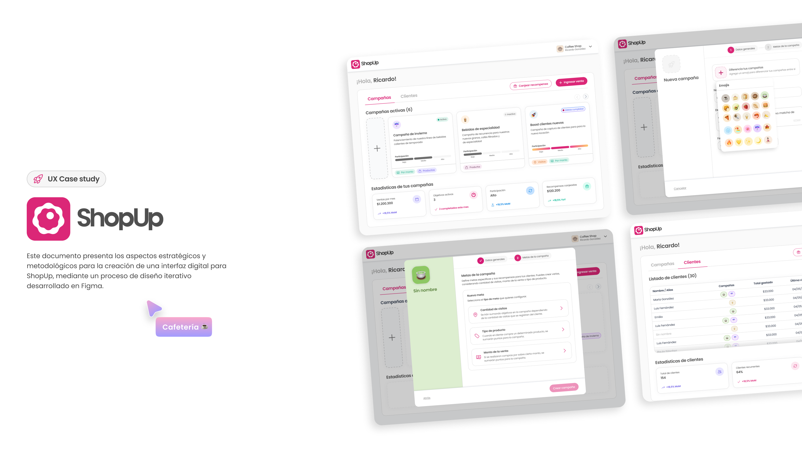
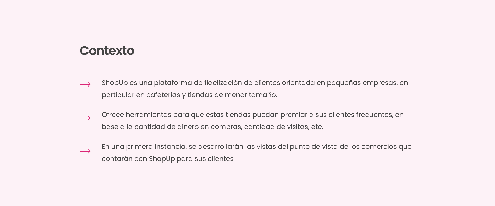
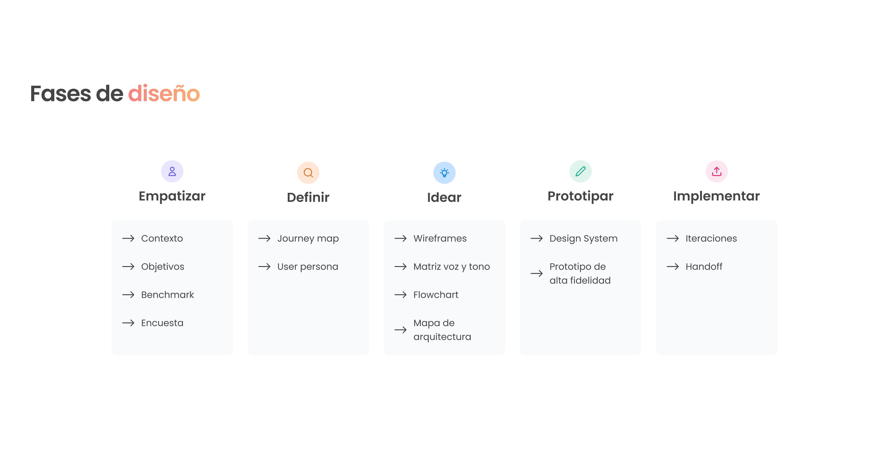
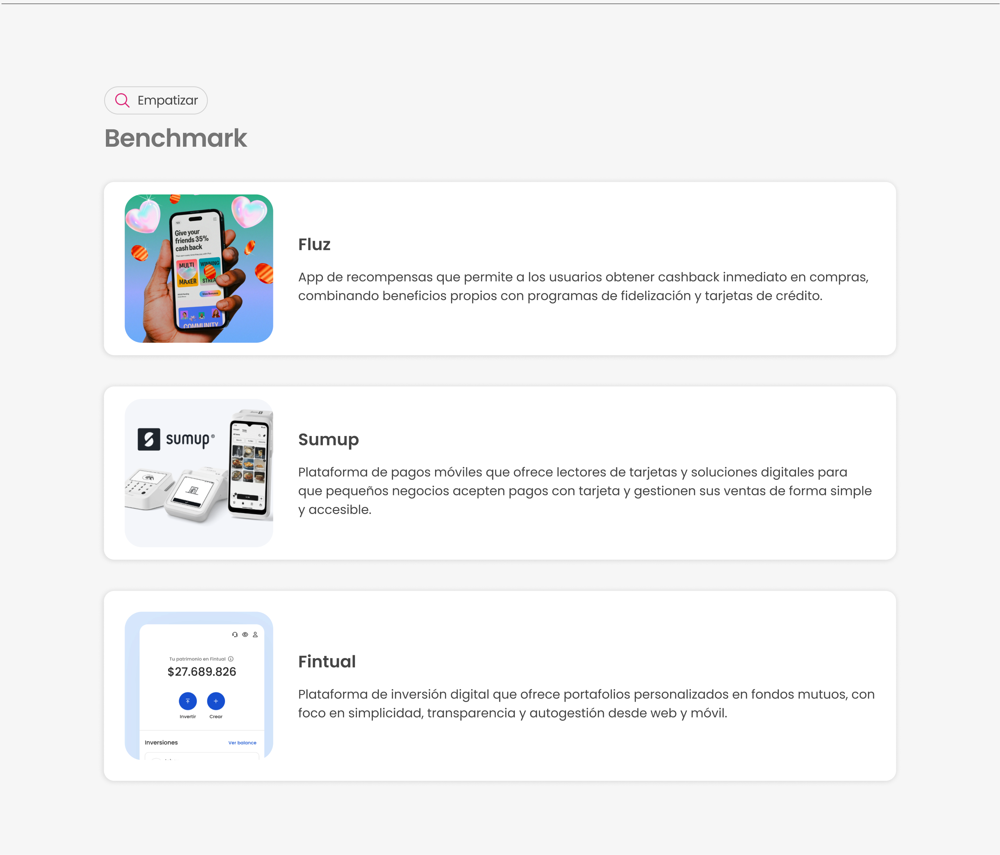
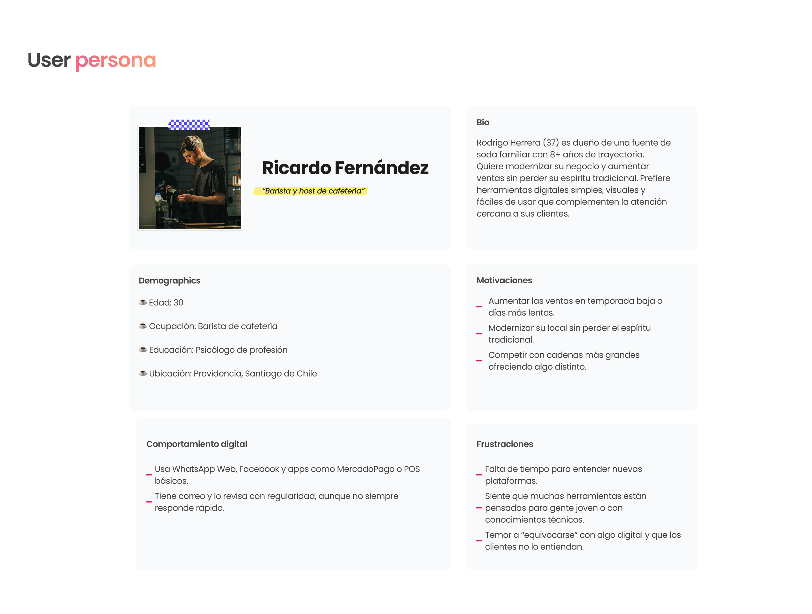
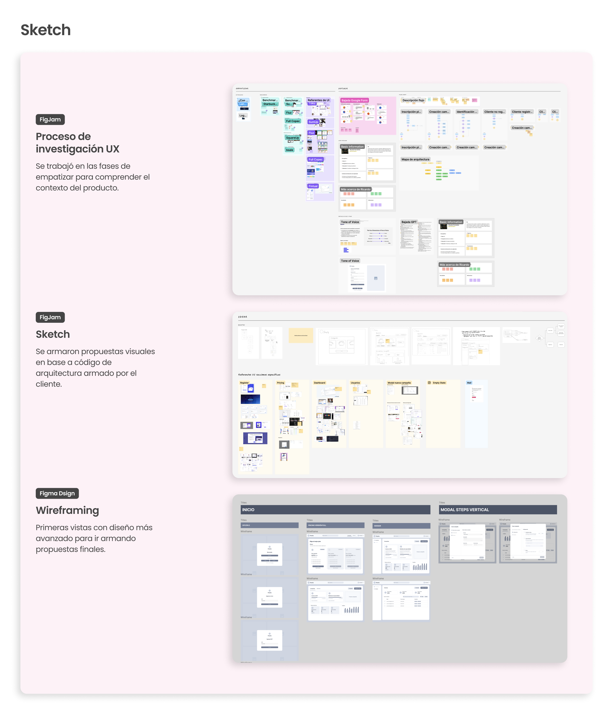
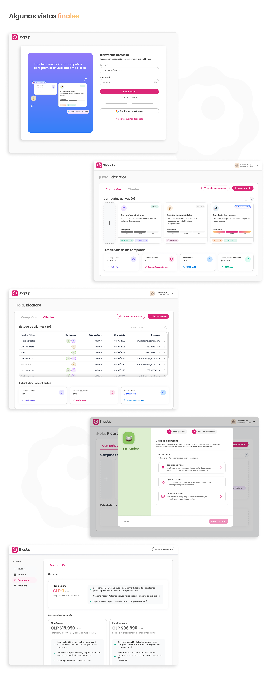

UX/UI Design
WebApp ShopUp

Descripción del proyecto
ShopUp es una plataforma enfocada en la fidelización de clientes, diseñada para ayudar a negocios a convertir ventas puntuales en relaciones duraderas. Permite optimizar las ventas y generar clientes recurrentes mediante herramientas que son personalizables y fáciles de usar..
Proceso de trabajo
Este trabajo es un freelance desaarrollado en el año 2025 mediante la metodología del Design Thinking, contando solo con el diseño de la arquitectura del sitio en el backend. Se comenzó mediante un proceso de research de UX y luego se fueron armando propuestas que iban siendo constantemente revisadas por el cliente.
También diseñé landing page de ShopUp 🚀






